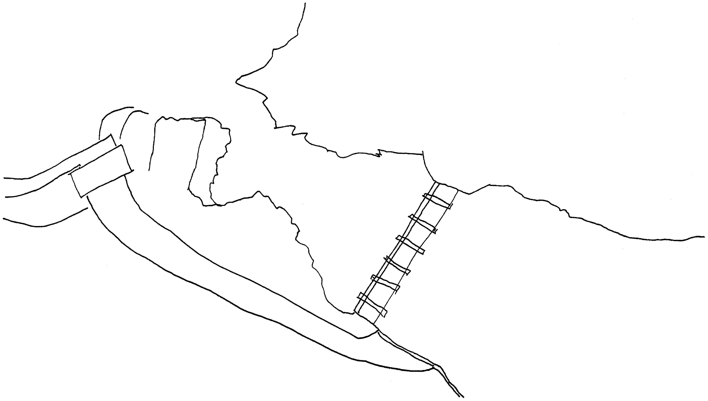
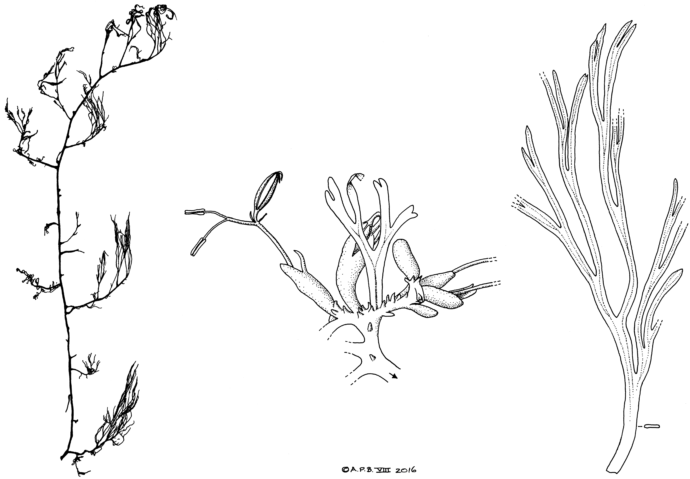
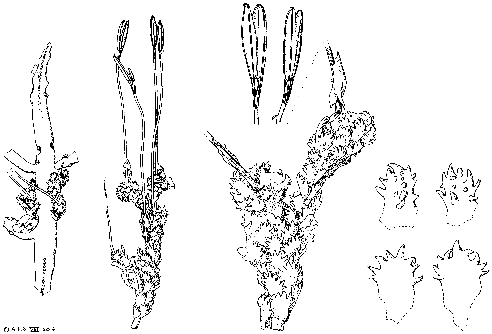
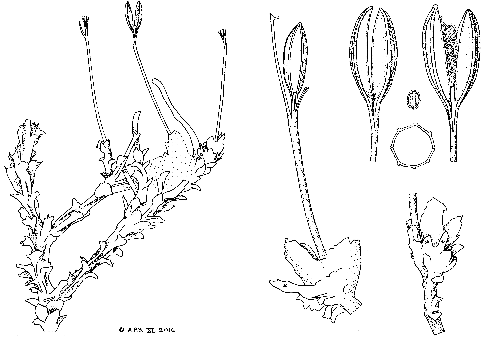

Cheek, M., Feika, A., Lebbie, A., Goyder, D., Tchiengue, B., Sene, O., Tchouto, P., Van Der Burgt, X.
Abstract
Six new species of<i> Inversodicraea</i> (<i>I. feika</i> from Sierra Leone,<i> I. liberia</i> from Liberia, and<i> I. ebo</i>,<i> I. eladii</i>,<i> I. tchoutoi</i>, and<i> I. xanderi</i> from Cameroon) are described as new to science in the context of a synoptic revision of this African
Full text
Full text is available as a scanned copy of the original print version.
Get a printable copy (PDF file) of the
complete article, or click on a page image below to browse page by page.
Links are also available for
Selected References.
Images in this article

Fig. 1 The hydroelectric power plant at Tshopo River Falls, Kisangani, DRC, N0°32’17.03” E25°11’14.29”. Showing layout of 1950s constructed ROR hydropower installation which preceded the local extinction of I. congolana at one of its only two global sites. From Google Earth imagery dated 11 Jan. 2016 (Digital Globe). — Drawn by Martin Cheek.
Fig. 2 Inversodicraea feika Cheek. a. Habit in dry season; a1. branched, erect flowering plant, leaves fallen; a2. subcylindrical root developing from old stem; b1. detail of a1; b2. detail of spur shoot with scale-leaves; c. stolon-like root upper surface, showing opposite, distichous short leaves and endogenous branch- ing; d. stolon-like root, lower surface, with two undifferentiated endogenous root branches (detail from a2); e. spur shoot with spathellum just after dehiscence; f. spur shoot, with flower at anthesis; g. fruit; h. fruit in transverse section, three seeds in lateral view above (all from Feika 78B, K). — Scale bars: a = 1 cm; b – d = 5 mm; e–g = 2 mm; h, b (small inset) = 0.5 mm. — Drawn by Andrew Brown.

Fig. 3 Inversodicraea feika Cheek. a. Habit, end wet season, long stem with branches, dichotomous leaves attached; b. detail of spur shoot with scale-leaves, spathellae and one dichotomous leaf; c. flattened, ribbon-like, dichotomous leaf (transverse section at lower right) (all from Feika 146, K). — Scale bars: a = 10 cm; b = 1 cm; c = 2 cm. — Drawn by Andrew Brown.
Fig. 4 Inversodicraea ebo Cheek. a. Habit, whole plant in flower and fruit, showing disc-like thalloid portion anchored to rock; b. details of non-flowering plant, showing (below) base of stem (inset detail of corky epidermal cells) and non-pectinate scale-leaves on branches; (above) terminal origin of leaves (inset transverse section of leaf base); c. detail of dichotomously branched leaves; d. portion of lower stem showing scale-leaves lacking pectinate margins; e. stem from midpoint of plant showing pectinate scale-leaves covering c. 50 % of surface; f. stem apex with spathellae buds and scale-leaves covering 80 –100 % of surface; g. three scale-leaves showing variation (dotted basal line indicates insertion on stem); h. flower emerging from spathellum, before anthesis; i. flower detail at anthesis, note the distally united wings of the ovary ribs; j. whole flower at anthesis, including spathellum; k. fertilised ovary, transverse section, slightly laterally flattened; l. seed, side view (all from Xander van der Burgt 1716, K). — Scale bars: a = 5 cm; b = 1 cm; c – f = 2 mm; g – j = 1 mm; k – l = 500 µm. — Drawn by Andrew Brown.

Fig. 5 Inversodicraea xanderi Cheek. a. Root viewed from above, showing erect leaflet covered stems and pedicel bases; b. erect, sparingly branched stem with fruits; c1. detail of fruiting stems, with c2 detail of dehisced fruits; d. detail of spathellae-subtending scale-leaves; e. detail of normal scale-leaves (all from Xander van der Burgt 1940, K). — Scale bars: a – b = 1 cm; c1– c2 = 2 mm; d – e = 1 mm. — Drawn by Andrew Brown.
Fig. 6 Inversodicraea tchoutoi Cheek. a. Branched root, with base of perennial erect stems; b. distal portion of branching stems showing scale-leaves and leaves; c. detail of distal leaflet from b; d. detail of older leaflet from b; e. distal part of stem with unopened spathellae; f. detail of upper part of leaflet from e (base concealed by scale-leaves below); g. entire leaflet from e, including base; h. stem apices with flower at anthesis; i. detail of flower excluding pedicel, note the three styles; j. monad pollen grain; k. ovary, transverse section; l. fruit after dehiscence, inner surface of valves (all from Tchouto 3377, K). — Scale bars: a–b = 1 cm; c–g, i, k – l = 1 mm; h = 3 mm. — Drawn by Andrew Brown.
Fig. 7 Inversodicraea eladii Cheek. a. Habit, showing stem basal branching, note origin of leaves from pseudo-dichotomies; b. detail from a (point marked *) pseudo-dichotomous node; c. detail of scale-leaves from base and central parts of stems shown in a; d. stem apex with leaves and flowers; e. scale-leaves from d, note the subulate scale-leaves subtending the spathellum at left; f. flower; g. gynoecium and tepals; h. ovary apex with stigmas; i. transverse section of ovary (all from Elad et al. 1485, K). — Scale bars: a = 1 cm; b, d = 5 mm; c, e, g – i = 1 mm; f = 2 mm. — Drawn by Andrew Brown.

Fig. 8 Inversodicraea liberia Cheek. a. Habit, fruiting plant; b. detail of stem below spathellum, * indicates young scale-leaves; c. post-anthetic flower showing remains of 2 anthers and spathellum; d. fruit, dehiscence incipient, note absence of commissural ribs; e. dehiscing fruit with seeds; f. transverse section of fruit; g. seed (all from R.M. Warner 87A, K). — Scale bars: a = 2 mm; b – g = 1 mm. — Drawn by Andrew Brown.